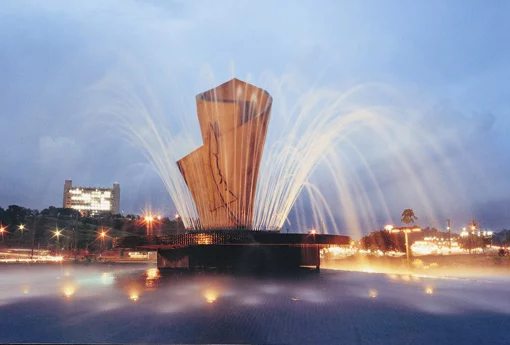
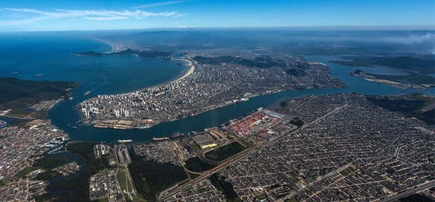
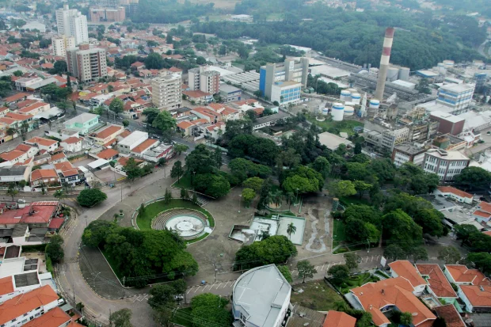
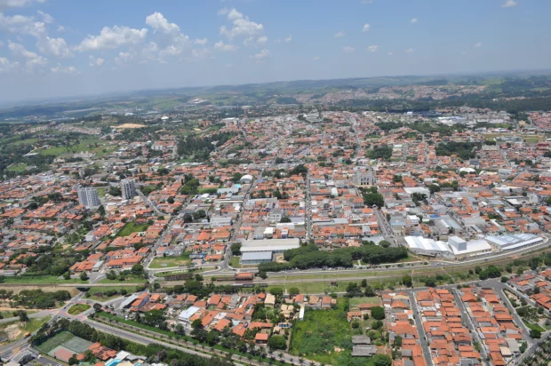
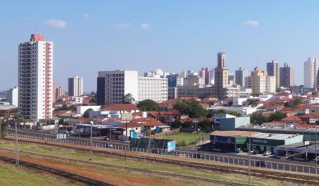

Estado de São Paulo
São Paulo é uma das 27 unidades federativas do Brasil. Está situado na Região Sudeste e tem por limites os estados de Minas Gerais a norte e nordeste, Paraná a sul, Rio de Janeiro a leste e Mato Grosso do Sul a oeste, além do Oceano Atlântico a sudeste. É dividido em 645 municípios e sua área total é de 248 222,362 km², o que equivale a 2,9% da superfície do Brasil, sendo pouco maior que o Reino Unido. Sua capital é o município de São Paulo e seu atual governador é João Doria.
Com 46,2 milhões de habitantes, ou cerca de 22% da população brasileira, é o estado mais populoso do Brasil, a terceira unidade política mais populosa da América do Sul (superado pela Colômbia e pelo restante da federação brasileira) e a subdivisão nacional mais populosa do continente americano. A população paulista é uma das mais diversificadas do país e descende principalmente de italianos, que começaram a emigrar para o país no fim do século XIX, de portugueses, que colonizaram o Brasil e instalaram os primeiros assentamentos europeus na região, de povos ameríndios nativos, de povos africanos e de migrantes de outras regiões do Brasil. Outras grandes correntes imigratórias, como de árabes, alemães, chineses, espanhóis e japoneses, também tiveram presença significativa na composição étnica da população local.
A área que hoje corresponde ao território paulista já era habitada por povos indígenas desde aproximadamente 12000 a.C. No início do século XVI, o litoral da região começou a ser visitado por navegadores portugueses e espanhóis. No entanto, apenas em 1532 o português Martim Afonso de Sousa iria fundar a primeira povoação de origem europeia — a vila de Cananéia, na atual Vale do Ribeira. No século XVII, os bandeirantes paulistas intensificaram a exploração do interior da colônia, o que acabou por expandir os domínios territoriais dos portugueses na América do Sul. No século XVIII, após a instituição da Capitania de São Paulo, a região começa a ganhar peso político. Após a independência, durante o Império, São Paulo começa a se tornar um grande produtor agrícola (principalmente de café), o que acaba por criar uma rica oligarquia rural regional, que iria se alternar no comando do governo brasileiro com as elites mineiras durante o início do período republicano. Sob o regime de Vargas, o estado é um dos primeiros a iniciar um processo de industrialização e sua população se torna uma das mais urbanas da federação.

São Caetano do Sul
São Caetano do Sul é um município brasileiro do estado de São Paulo, na mesorregião Metropolitana de São Paulo e microrregião de São Paulo. Está localizado na Zona Sudeste da Grande São Paulo, em conformidade com a lei estadual nº 1.139, de 16 de junho de 2011 e, consequentemente, com o Plano de Desenvolvimento Urbano Integrado da Região Metropolitana de São Paulo (PDUI).
É a cidade com o melhor IDH do Brasil (PNUD/2010), e também com o 48º maior PIB brasileiro. A população aferida no Censo de 2010 foi de 149.263 habitantes. A estimativa de população, calculada pelo IBGE com data de referência 1 de julho de 2019, foi de 161 127 habitantes. A área total da cidade é de 15,331 km², o que resulta numa densidade demográfica de 9.736,03 hab/km² (Censo de 2010).
É intensamente conurbada com São Paulo, Santo André e São Bernardo do Campo, fazendo com que se percam os limites físicos entre as cidades. São Caetano do Sul, juntamente com Ferraz de Vasconcelos, é uma das duas cidades do estado de São Paulo que não são atravessadas por nenhuma rodovia estadual ou federal.
 Hino da cidade
Hino da cidade
Águas de São Pedro
Águas de São Pedro é um município brasileiro do estado de São Paulo, distante 187 quilômetros de sua capital. Ocupa uma área de 3,61 km², sendo o menor município paulista e o segundo menor município brasileiro em extensão territorial, sendo maior apenas que Santa Cruz de Minas (MG). O seu Índice de Desenvolvimento Humano (IDH) é de 0,854, sendo o segundo melhor de São Paulo, como também o segundo melhor do Brasil, sendo superado por São Caetano do Sul, no mesmo estado.
Águas de São Pedro foi emancipado de São Pedro na década de 1940. Atualmente, é formado pelo município de Águas de São Pedro, sendo a sede seu único distrito, subdividido ainda em seus quatro bairros. Hoje é um dos onze municípios paulistas considerados como estâncias hidrominerais pelo governo do estado de São Paulo, por cumprirem determinados pré-requisitos definidos por Lei Estadual.
A cidade é conhecida pelas suas águas hidrominerais de valor medicinal, tendo suas fontes naturais com alguns dos principais atrativos turísticos. Possui ainda dois grandes parques (Dr. Octavio Moura Andrade Parque Municipal e o Parque das Águas "José Benedito Zani"), além do minijardim municipal, importantes áreas verdes do município.
 Hino da cidade
Hino da cidade
São Paulo
Fundada em 1554 por padres jesuítas, a cidade é mundialmente conhecida e exerce significativa influência nacional e internacional, seja do ponto de vista cultural, econômico ou político. Conta com importantes monumentos, parques e museus, como o Memorial da América Latina, o Museu da Língua Portuguesa, o Museu do Ipiranga, o MASP, o Parque Ibirapuera, o Jardim Botânico de São Paulo e a avenida Paulista.
O município possui o 10.º maior PIB do mundo, representando, isoladamente, 11% de todo o PIB brasileiro, 34% do PIB do estado, bem como 36% de toda a sua produção de bens e serviços, além de ser sede de 63% das multinacionais estabelecidas no Brasil, sendo ainda responsável por 28% de toda a produção científica nacional em 2005, e por mais de 40% das patentes produzidas no país. A cidade também é a sede da B3 (sigla de Brasil, Bolsa, Balcão), a 5.ª maior bolsa de valores do mundo em capitalização de mercado (dados de 2017), resultado da fusão da Bolsa de Valores, Mercadorias e Futuros de São Paulo (BM&FBOVESPA) com a Central de Custódia e de Liquidação Financeira de Títulos (CETIP). São Paulo também concentra muitos dos edifícios mais altos do Brasil, como os edifícios Mirante do Vale, Itália, Altino Arantes, a Torre Norte, entre outros.
A cidade é a 8.ª mais populosa do planeta e sua região metropolitana, com cerca de 21 milhões de habitantes, é a 10.ª maior aglomeração urbana do mundo. A capital paulista também possui um caráter cosmopolita, dado que, em 2016, possuía moradores nativos de 196 países diferentes. Regiões ao redor da Grande São Paulo também são metrópoles, como Campinas, Baixada Santista e Vale do Paraíba; além de outras cidades próximas, que compreendem aglomerações urbanas em processo de conurbação, como Sorocaba e Jundiaí. Esse complexo de metrópoles — o chamado Complexo Metropolitano Expandido — chegava a 33 milhões de habitantes em 2017 (cerca de 75% da população do estado e 12% da população do país) formando a primeira megalópole do hemisfério sul, responsável pela produção de 80% do PIB paulista e de quase 30% do PIB brasileiro.
 Hino da cidade
Hino da cidade
Jundiaí
Jundiaí é um município brasileiro no interior do estado de São Paulo. Localiza-se a 23º11'11" de latitude sul e 46º53'03" de longitude oeste, a uma altitude de 762 metros. Dista 57 quilômetros de São Paulo. Conforme dados do Instituto Brasileiro de Geografia e Estatística (IBGE) de 2019, sua população era de 418 962 habitantes, ficando na 15° posição entre os municípios mais populosos do estado, sendo o 6º maior do interior paulista. Também é o 59° maior do Brasil, sendo maior que quatro capitais estaduais. Seu nome é uma referência ao rio Jundiaí.
A cidade possui conurbação consolidada com Várzea Paulista e Campo Limpo Paulista, além de estar em processo de conurbação com Itupeva. As cidades mencionadas fazem parte da Aglomeração Urbana de Jundiaí juntamente com os municípios de Cabreúva, Louveira e Jarinu, totalizando cerca de 771 mil habitantes. O município está integrado — junto com a Grande São Paulo, a Região Metropolitana de Campinas, a Região Metropolitana do Vale do Paraíba e Litoral Norte, a Região Metropolitana de Sorocaba e a Baixada Santista — ao Complexo Metropolitano Expandido, uma megalópole que ultrapassa os 30 milhões de habitantes (cerca 75% da população paulista) e que é a primeira aglomeração urbana do tipo no hemisfério sul.
A paisagem mais marcante da cidade é a Serra do Japi, uma das grandes áreas de Mata Atlântica nativa contínua no estado de São Paulo, denominada como "Castelo de Águas" por muitos naturalistas, como o geógrafo Aziz Ab'Saber, devido a sua riqueza hídrica. Foi tombada em 1983 pelo Conselho de Defesa do Patrimônio Histórico e, posteriormente, regulamentada como reserva biológica. Foi declarada em 1992 pela Organização das Nações Unidas para a Educação, a Ciência e a Cultura como reserva da biosfera da mata atlântica.
 Hino da cidadeSantos
Santos é um município portuário sede da Região Metropolitana da Baixada Santista, localizado no litoral do estado de São Paulo, no Brasil. Com a maior participação econômica da citada região, abriga o maior porto da América Latina, o principal responsável pela dinâmica econômica da cidade ao lado do turismo, da pesca e do comércio, ocupando a 5ª colocação entre as não capitais mais importantes para a economia brasileira e 10ª colocada segundo a qualidade de vida. A cidade é sede do poder executivo paulista todo dia 13 de junho (capital simbólica de São Paulo) e não apenas sede de diversas instituições de ensino superior como também da mais antiga entidade geral estudantil do Brasil, o Centro dos Estudantes de Santos.
Santos possui uma economia crescente. Em 2016, a cidade era a 33ª mais rica do país, com produto interno bruto de 21 954 556,74 de reais. Durante um bom tempo, sua economia centrou-se na comercialização do café; em 1922 foi inaugurada a Bolsa Oficial do Café, onde eram negociadas riquezas do mercado cafeeiro para o país, e que resultou no atual Museu do Café abrigado no local atualmente conhecido como Centro Histórico, espaço que promove exposições sobre a trajetória do produto pelo Brasil e pela cidade e que é decorado com obras do artista Benedito Calixto.
Maior cidade do litoral paulista, o principal cartão-postal do município são os 7 km de praia. O Livro dos Recordes situa os jardins da orla de Santos como formadores do maior jardim frontal de praia em extensão do mundo. A preservação e o cuidado com a flora do ambiente praiano santista, permeado de palmeiras e amendoeiras, são resultados de um trabalho em conjunto dos departamentos de meio ambiente da região, muitas vezes ligados a universidades ou a instituições científicas. A estimativa de população em 2020 era de 433 656 habitantes. A Baixada Santista, com 1,7 milhão de habitantes em 2008, é parte — junto com a Grande São Paulo e a Região Metropolitana de Campinas — do Complexo Metropolitano Expandido, uma megalópole que ultrapassava, já naquele ano, os 30 milhões de habitantes (cerca 75% da população paulista) e que é a primeira aglomeração urbana do tipo no hemisfério sul.
 Hino da cidadeValinhos
Valinhos é um município brasileiro do estado de São Paulo. Está localizado, estrategicamente, na Região Metropolitana de Campinas e já foi distrito de Campinas. Sua população, conforme estimativas do IBGE de 2019, era de 129 193 habitantes e sua área territorial é de 148,538 km².
Conhecida como a Capital do Figo Roxo, Valinhos é hoje também lembrada pela grande produção de goiaba, bem como por ser a cidade natal do compositor, cantor e ator Adoniran Barbosa. Nascido no dia 6 de agosto de 1910, Adoniran Barbosa foi um dos artistas mais consagrados e de referência no âmbito do samba, tendo feito história na cidade de São Paulo com a composição da música Trem das Onze; cidade na qual viria a falecer em 23 de novembro de 1982.
Valinhos possui uma área de 148,538 km², dos quais 83 km² compõem sua área urbana, formando uma mancha descontínua com Campinas e Vinhedo, e 65,538 km² integram sua área rural, predominantemente localizada à oeste da Rodovia Anhanguera e na divisa com Itatiba.
 Hino da cidadeVinhedo
Vinhedo é um município brasileiro no interior do estado de São Paulo. Localiza-se na micro e mesorregião de Campinas, a 75 quilômetros da capital paulista. Com uma população de 72 550 habitantes segundo o censo demográfico do Instituto Brasileiro de Geografia e Estatística (IBGE) de 2015, destaca-se por ser um dos municípios com maior Índices de Desenvolvimento Humano (IDH) do país.
A maior parte da vegetação original que tinha na cidade, a Mata Atlântica, foi devastada. Assim como outros 13 dos 20 municípios que compõem a Região Metropolitana de Campinas, o município sofre severa tensão ambiental. Vinhedo, juntamente com Campinas e Artur Nogueira, é considerada uma das áreas mais sujeitas a inundações e assoreamento e responde por menos de 5% da cobertura vegetal.
O clima de Vinhedo é considerado tropical de altitude (do tipo Cwa) na classificação climática de Köppen-Geiger, segundo o Centro de Meteorologia e Climatização Aplicada à Agricultura (CEPAGRI) da Universidade Estadual de Campinas (UNICAMP). De acordo com dados do Centro Integrado de Informações Agrometeorológicas (CIIAGRO/SP), desde junho de 2015 a menor temperatura registrada em Vinhedo foi de 4,8 °C em 13 de junho de 2016 e a maior alcançou 38,4 °C em 8 de outubro de 2020.
 Hino da cidadeSanto André
Santo André é um município brasileiro da Região do Grande ABC, localizado na Zona Sudeste da Grande São Paulo, parte da Região Metropolitana de São Paulo, em conformidade com a lei estadual nº 1.139, de 16 de junho de 2011 e, consequentemente, com o Plano de Desenvolvimento Urbano Integrado da Região Metropolitana de São Paulo (PDUI).
Sua população estimada para 1.º de julho de 2020 era de 721 368 habitantes, ocupando uma área de 175,782km²./p>
Santo André é a décima quinta cidade brasileira mais desenvolvida, e a oitava cidade mais desenvolvida do estado de São Paulo, segundo a ONU. É também a quinta melhor cidade do país onde criar filhos.
 Hino da cidade
Hino da cidade
Araraquara
Araraquara é um município no interior do estado de São Paulo, no Brasil. O município é formado pela sede e pelos distritos de Bueno de Andrada e Vila Xavier. Sua população, conforme estimativas do IBGE de 2020, era de 238 339, correspondendo em uma densidade populacional de 235,2 habitantes/km².
Com uma área territorial de 1.003,625 km² é o 38º maior município do estado e o 1402º do país. Localizada a 21º47'40" de latitude sul e 48º10'32" de longitude oeste, a uma altitude de 664 metros, Araraquara situa-se a 43 quilômetros do centro geográfico (Obelisco) do Estado de São Paulo, e a 270 quilômetros da capital estadual. É o 37º município mais populoso do estado e o 128º mais populoso do país. Encontra-se conurbado com Américo Brasiliense na área urbana contínua. Araraquara é um polo regional, sediando a Região Geográfica Intermediária (26 municípios) e Região Geográfica Imediata (17 municípios) ao seu entorno. O estudo mais recente do IBGE sobre Regiões de Influência das Cidades - REGIC (2018), classificou a cidade como Capital Regional C, sediando o Arranjo Populacional de Araraquara e relacionando-a diretamente ao Arranjo Populacional de Ribeirão Preto.
O município de Araraquara sedia os campi da Universidade Estadual Paulista (Unesp), da Fundação Estadual Paula Souza (FATEC) e do Instituto Federal de São Paulo (IFSP), todas instituições públicas de ensino superior, além de possuir outras, de caráter privado, como a Universidade de Araraquara UNIARA, a UNIP, as Faculdades Integradas de Araraquara Logatti e a UNIESP. O Índice de Desenvolvimento Humano Municipal (IDH-M) de Araraquara, considerado elevado pelo Programa das Nações Unidas para o Desenvolvimento (PNUD), é de 0,815, sendo o 14° maior do Brasil. Em 2007, foi a cidade brasileira melhor qualificada quanto ao Índice FIRJAN de Desenvolvimento Municipal, que usa critérios de renda, educação e saúde.
 Hino da cidadeSantana de Parnaíba
Com 0,814 de IDHM, o município que pertence à Região Metropolitana de São Paulo possui em torno de 123 mil habitantes. A fundação da cidade, em 1580, remonta ao início da colonização no Brasil, o que faz dela uma das mais antigas do estado. A longa história também deixou como herança um Centro Histórico bastante visitado, que reúne em torno de 200 casas e construções datadas dos séculos XVII e XVIII. Trata-se do maior conjunto colonial do estado.
O clima da cidade, como em toda a Região Metropolitana de São Paulo, é o subtropical. Verão quente e chuvoso. Inverno relativamente frio e subseco. A média de temperatura anual gira em torno dos 20Cº, sendo o mês mais frio julho (média de 12°C) e o mais quente fevereiro (média de 23°C). O índice pluviométrico anual fica em torno de 1382 mm.
O município conta com uma política de preservação ambiental, conforme legislação em vigor, que tem proporcionado a criação e a manutenção de áreas de valor ecológico e ambiental, assim como a defesa e a preservação da fauna e da flora.
 Hino da cidade
Hino da cidade